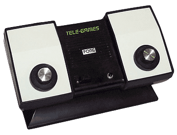

General Preview
For what's about the first generation videogames, there weren't really different genres. This is obviously due to the lack of today's possibility of making videogames. In fact, everything in This field was at his dawn, and so their consequences.
Genres
Sport
The Sports genre was the most spread one, in particular, thanks to the huge numbers had by the Home Pong from Atari. All the following videogames were simple variations of this one (or the other way around, if we think about Magnavox Odyssey).
Light Gun

This genre was mainly supported by the Shooting Gallery and some others as Shootout. It was based on killing some simple targets with the pistol, which had to be pointed in their direction and would have then detected them thanks to a sensor.
Various
Magnavox Odyssey provided lots of different games for that epoch. Various stays for all those games which aren't part of a real category such as "Cat and Mouse", "Fun Zoo", "Invasion" and so on. These were still just a simple different way to use the usual displays, adding, in some cases, external skins to complete the game as in "Cat and Mouse".
Others
The remaining ones weren't exactly genres since there are really few games appertaining to them as Magnavox SubMarine for Shooter genre and States for Education. But this was again only a different way to display the same stuff.